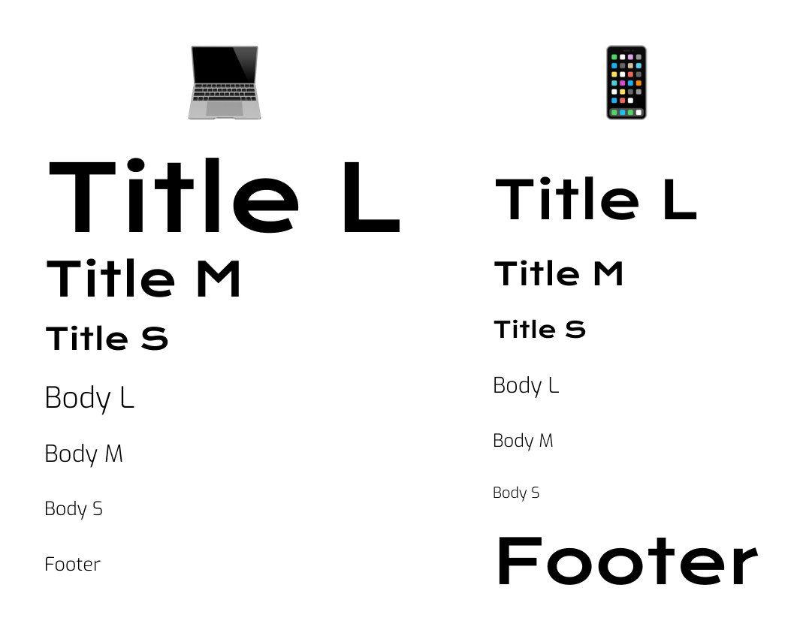

Space Travel
overview
Space Travel is supposed to work as a landing page (for both mobile phone and desktop)
for a fictional travel agency that specializes in luxury trips to Mars.
Texts were given to us and we were asked to do all the visual process, excluding the
previous data recollection and UX study that would recquire a full project of its own.
Since it was mostly finding an image and branding for the agency, the first steps in the Double Diamond Process
were not carried (as shown in the schema below).
date
2020
areas
Wireframing, Sketching, Prototyping, Branding
tools
Figma, Miro, Adobe Suite, Airtable
Value proposition

Process
Wireframing
The goal for this was to create a landing page that serves as primary information
for someone who wants to travel to Mars, and therefore had to be something vibrant and eye-catching.
Since we were given the content and had to design the landing page based on this,
the first step was to locate and structure the landing page into wireframes.
I normally made them by hand and then project that into Miro, as it can be easily shared with others.
As this project did not need any interaction and it was very simple, I didn't need to create its wireframes digitally.

Moodboard
Next, I started to search for inspiration that could help me set the mood. Since this was space-related, I searched
for cyberpunk films, dystopian scenarios, neo noir aesthetics and art from Moebius.
Although the final product didn't quite reach this futuristic aesthetic, it held resemblance with some films that
I researched (mostly Blade Runner and Ad Astra).
Here is a photo of a small part of my moodboard.
Typography
Once I knew what I wanted, I started to play with the colors and fonts to set the typography, typescale and palette.
Belowe you'll find some tests that I did before deciding which typography I was going to use.
Since Space Travel is supposed to be about some utopian space voyage agency, I started to look for two different fonts
(one for the titles and one for the body), which should preferably be two Sans Serif.
My idea was to pick a typography that looked futuristic and that is why the next selection are all very similar in its
round but geometric shapes.
The final choice was Krona One for the titles, which was inspired by hand lettering on early 20th century Swedish posters,
and resembles this dystopian look that also appeared in my previous moodboard research.
For the body I used Exo, which is described as "trying to convey a technological/futuristic feeling while keeping an elegant design",
so it completely fits the look that I am going for.
Typescale

Palette
As shown, I had different options for the color palette, which were mostly selected from the moodboard but the one that convinced me the most was the one closest to our imaginery of Mars, and since it was a landing page, I wanted it to be easily distinguishable.
I selected some orangish and yellowish tones that would be the base for the landing page, and these would work together with the primary tones, which would be used primarly for the text and smaller details.
Here are some rejected colortests that I've done before deciding to go for a more classically associated tonalities. These combination of colors are also based on the discarded palettes.
Prototype
The prototype (both in mobile and desktop) has been done in Figma, and since it didn't have any interactions, it can be easily scrolled. The final result, I believe, turned out to be similar to what I initially planned. This was my first contact and approach to UI design, and although it does not have any complex userflow, it helped me understand the basics of wireframing and prototyping. The result for the mobile version can be seen below, so give it a try!
Thank you!